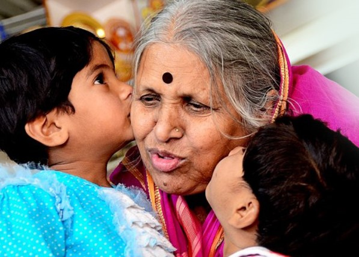
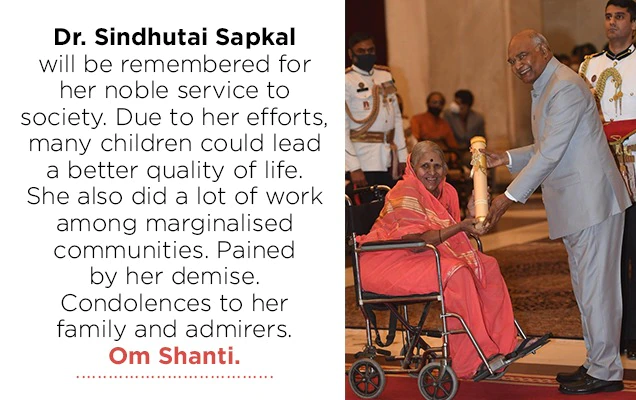

Sindhutai Sapkal

"Mother of Orphans"
Determined to not give it all up, Sindhutai resorted to begging on railway platforms for food. While begging, she came across many abandoned children who would also beg for food. She realized that they were worse off than her. She started adopting them as her own and began begging more actively to feed them. Sapkal devoted herself to orphans. As a result, she was fondly called "Mai", which means "mother".
She nurtured over 1,500 orphaned children and through them had a grand family of 382 sons-in-law and 49 daughters-in-law.
She has been honoured with more than 700 awards for her work. She used award money to buy land to make a home for orphaned children.
Organisations
- Mother Global Foundation Pune
- Sanmati Bal Niketan, Bhelhekar Vasti, Manjri, Hadapsar, Pune
- Mamata Bal Sadan, Kumbharvalan near Saswad, Purandar taluka (started in 1994)
- Savitribai Phule Mulinche Vasatigruh (Girls' Hostel) Chikhaldara, Amravati
- Abhiman Bal Bhavan, Wardha
- Gangadharbaba Chhatralaya, Guha shirdi
- Saptsindhu' Mahila Adhar, Balsangopan Aani Shikshan Sanstha, Pune
Awards
- 2021 - Padma Shri in Social work category
- 2017 - Nari Shakti Puraskar from the President Of India
- 2016 - Honorary doctorate by the Dr. D.Y. Patil College of Engineering, Pune
- 2016 - Social Worker of the Year award from Wockhardt Foundation
- 2014 - Ahmadiyya Muslim Peace Prize
- 2013 - Mother Teresa Awards for Social Justice
- 2013 - The National Award for Iconic Mother
